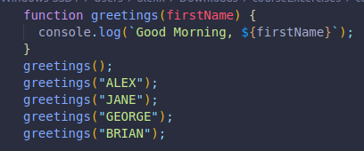
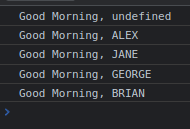
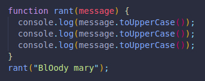

Arguments go between the parenthesis after the function name. The argument is the value we enter once the function has been defined, before then it is a parameter.
Simple functions don't take arguments, since they are created without any parameters..
We've used them before!
When we check for an index: "hello".indexOf("h"); -->0
The argumen there is "h", but we sometimes don't enter arguments and just leave the section blank, like our previous simple functions, where the output of the function is always the same.
With arguments we can have different outputs depending on the values we give the parameter.
When we console log something, the argument is the string or value between parenthesis.
When we .push() to an array, it's the same. These are all methods, but also functions.
To pass an argument, we enter a variable name in the parameter, it has no meaning outside the function.
Here we have a function.
The argument firstName is a placeholder, waiting to be filled with our argument once we call the function.
Here is the result from the console.
We called the function without an argument first, it returns undefined because we created the function with an argument. If the function expects an argument, and we leave the parameter blank or empty, it will be undefined by default.
The other 4 times it was called, it replaced the parameter for the value or arguments we entered.
Here we are telling our function to console log the argument 3 times in uppercase letters.
